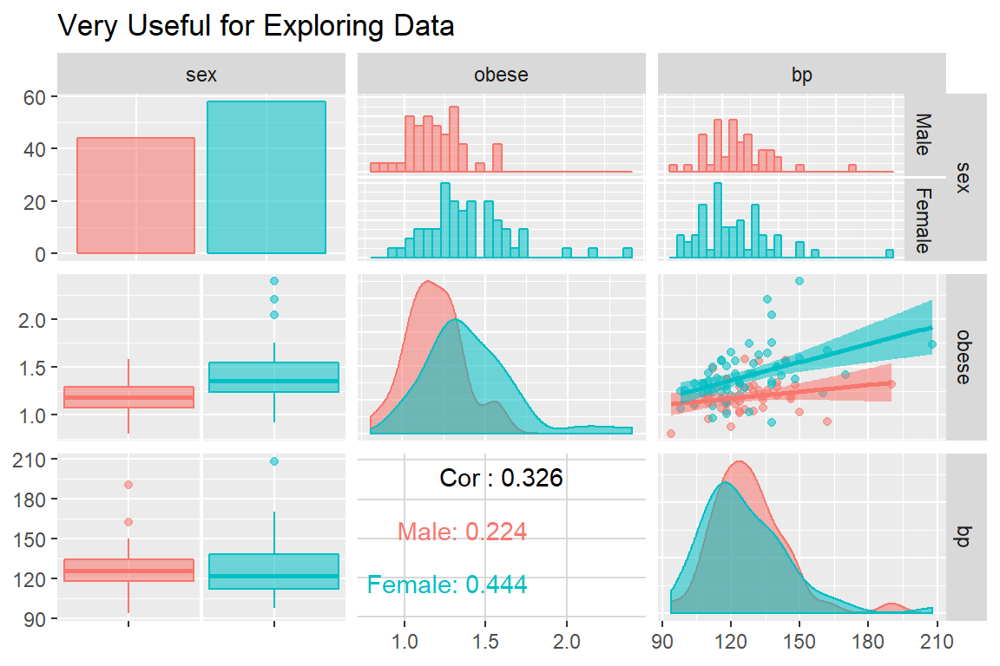
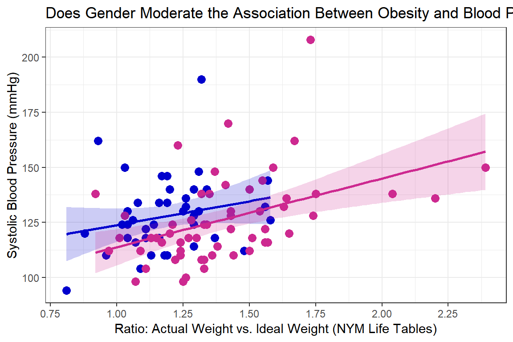
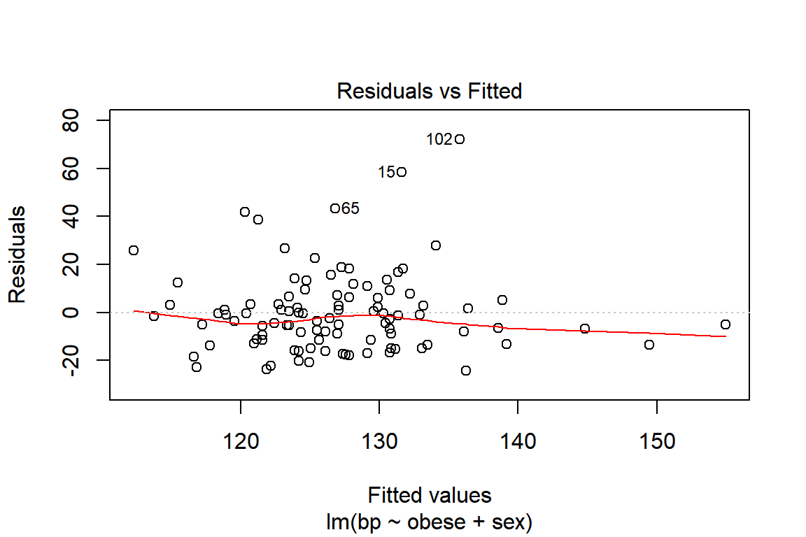
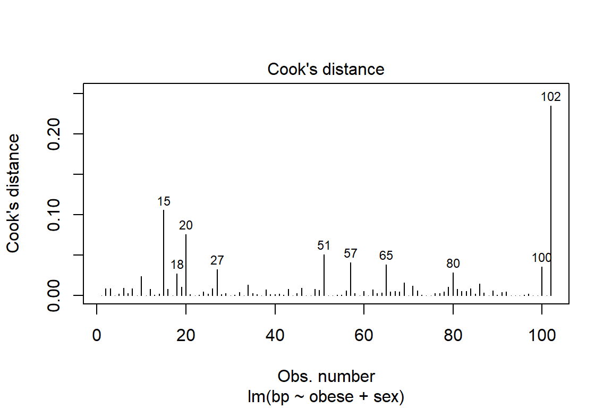
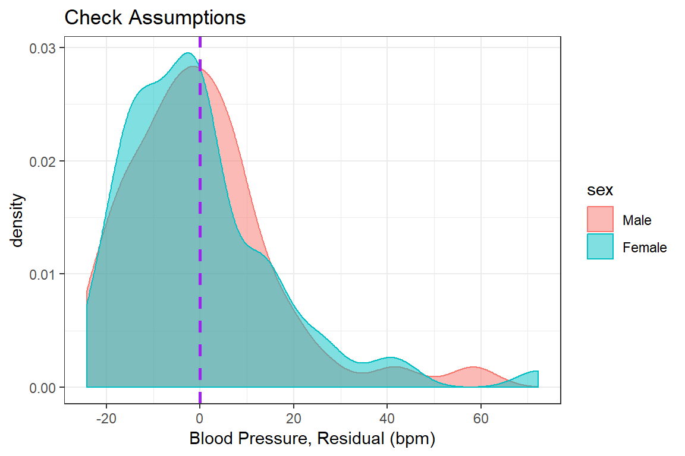

2 Multiple Linear Regression - Ex: Obesity and Blood Pressure (interaction between a continuous and categorical IVs)

library(tidyverse) # super helpful everything!
library(haven) # inporting SPSS data files
library(furniture) # nice tables of descriptives
library(texreg) # nice regression summary tables
library(stargazer) # nice tables of descrip and regression
library(corrplot) # visualize correlations
library(car) # companion for applied regression
library(effects) # effect displays for models
library(psych) # lots of handy tools
library(GGally) # extensions to ggplot2
library(ISwR) # Introduction to Statistics with R (datasets)2.1 Purpose
2.1.1 Research Question
Is obsesity associated with higher blood pressure and is that relationship the same among men and women?
2.1.2 Data Description
This dataset is included in the ISwR package (Dalgaard 2015), which was a companion to the texbook “Introductory Statistics with R, 2nd ed.” (Dalgaard 2008), although it was first published by Brown and Hollander (1977).
To view the documentation for the dataset, type ?bp.obese in the console and enter or search the help tab for `bp.obese’.
The
bp.obesedata frame has 102 rows and 3 columns. It contains data from a random sample of Mexican-American adults in a small California town.
This data frame contains the following columns:
sexa numeric vector code, 0: male, 1: femaleobesea numeric vector, ratio of actual weight to ideal weight from New York Metropolitan Life Tablesbpa numeric vector,systolic blood pressure (mm Hg)
data(bp.obese, package = "ISwR")
bp.obese <- bp.obese %>%
dplyr::mutate(sex = factor(sex,
labels = c("Male", "Female")))
tibble::glimpse(bp.obese)Observations: 102
Variables: 3
$ sex <fct> Male, Male, Male, Male, Male, Male, Male, Male, Male, Ma...
$ obese <dbl> 1.31, 1.31, 1.19, 1.11, 1.34, 1.17, 1.56, 1.18, 1.04, 1....
$ bp <int> 130, 148, 146, 122, 140, 146, 132, 110, 124, 150, 120, 1...2.2 Exploratory Data Analysis
Before embarking on any inferencial anlaysis or modeling, always get familiar with your variables one at a time (univariate), as well as pairwise (bivariate).
2.2.1 Univariate Statistics
Summary Statistics for all three variables of interest (Hlavac 2018).
bp.obese %>%
stargazer::stargazer(type = "html")| Statistic | N | Mean | St. Dev. | Min | Pctl(25) | Pctl(75) | Max |
| obese | 102 | 1.313 | 0.258 | 0.810 | 1.143 | 1.430 | 2.390 |
| bp | 102 | 127.020 | 18.184 | 94 | 116 | 137.5 | 208 |
2.2.2 Bivariate Relationships
The furniture package’s table1() function is a clean way to create a descriptive table that compares distinct subgroups of your sample (Barrett, Brignone, and Laxman 2018).
bp.obese %>%
furniture::table1(obese, bp,
splitby = ~ sex,
test = TRUE,
output = "html") | Male | Female | P-Value | |
|---|---|---|---|
| n = 44 | n = 58 | ||
| obese | <.001 | ||
| 1.2 (0.2) | 1.4 (0.3) | ||
| bp | 0.646 | ||
| 128.0 (16.6) | 126.3 (19.4) |
The ggpairs() function in the GGally package is helpful for showing all pairwise relationships in raw data, especially seperating out two or three groups (Schloerke et al. 2018).
GGally::ggpairs(bp.obese,
mapping = aes(fill = sex,
col = sex,
alpha = 0.1),
upper = list(continuous = "smooth",
combo = "facethist",
discrete = "ratio"),
lower = list(continuous = "cor",
combo = "box",
discrete = "facetbar"),
title = "Very Useful for Exploring Data") 
bp.obese %>%
ggplot() +
aes(x = sex,
y = bp,
fill = sex) +
geom_boxplot(alpha = 0.6) +
scale_fill_manual(values = c("mediumblue", "maroon3")) +
labs(x = "Gender",
y = "Blood Pressure (mmHg)") +
guides(fill = FALSE) +
theme_bw()
Visual inspection for an interaction (is gender a moderator?)
bp.obese %>%
ggplot(aes(x = obese,
y = bp,
color = sex)) +
geom_point(size = 3) +
geom_smooth(aes(fill = sex),
alpha = 0.2,
method = "lm") +
scale_color_manual(values = c("mediumblue", "maroon3"),
breaks = c("male", "female"),
labels = c("Men", "Women")) +
scale_fill_manual(values = c("mediumblue", "maroon3"),
breaks = c("male", "female"),
labels = c("Men", "Women")) +
labs(title = "Does Gender Moderate the Association Between Obesity and Blood Pressure?",
x = "Ratio: Actual Weight vs. Ideal Weight (NYM Life Tables)",
y = "Systolic Blood Pressure (mmHg)") +
theme_bw() +
scale_x_continuous(breaks = seq(from = 0, to = 3, by = 0.25 )) +
scale_y_continuous(breaks = seq(from = 75, to = 300, by = 25)) +
theme(legend.title = element_blank(),
legend.key = element_rect(fill = "white"),
legend.background = element_rect(color = "black"),
legend.justification = c(1, 0),
legend.position = c(1, 0))
bp.obese %>%
dplyr::mutate(sex = as.numeric(sex)) %>% # cor needs only numeric
cor() %>%
round(3) sex obese bp
sex 1.000 0.405 -0.045
obese 0.405 1.000 0.326
bp -0.045 0.326 1.000Often it is easier to digest a correlation matrix if it is visually presented, instead of just given as a table of many numbers. The corrplot package has a useful function called corrplot.mixed() for doing just that (Wei and Simko 2017).
bp.obese %>%
dplyr::mutate(sex = as.numeric(sex)) %>% # cor needs only numeric
cor() %>%
corrplot::corrplot.mixed(lower = "ellipse",
upper = "number",
tl.col = "black")
2.3 Regression Analysis
2.3.1 Fit Nested Models
The bottom-up approach consists of starting with an initial NULL model with only an intercept term and them building additional models that are nested.
Two models are considered nested if one is conains a subset of the terms (predictors or IV) compared to the other.
fit_bp_null <- lm(bp ~ 1, data = bp.obese) # intercept only or NULL model
fit_bp_sex <- lm(bp ~ sex, data = bp.obese)
fit_bp_obe <- lm(bp ~ obese, data = bp.obese)
fit_bp_obesex <- lm(bp ~ obese + sex, data = bp.obese)
fit_bp_inter <- lm(bp ~ obese*sex, data = bp.obese)2.3.2 Comparing Nested Models
2.3.2.1 Model Comparison Table
In single level, multiple linear regression significance of predictors (independent variables, IV) is usually based on both the Wald tests of significance for each beta estimate (shown with stars here) and comparisons in the model fit via the \(R^2\) values.
Again the texreg package comes in handy to display several models in the same tal e (Leifeld 2017).
texreg::htmlreg(list(fit_bp_null,
fit_bp_sex,
fit_bp_obe,
fit_bp_obesex,
fit_bp_inter),
custom.model.names = c("No Predictors",
"Only Sex Quiz",
"Only Obesity",
"Both IVs",
"Add Interaction"))| No Predictors | Only Sex Quiz | Only Obesity | Both IVs | Add Interaction | ||
|---|---|---|---|---|---|---|
| (Intercept) | 127.02*** | 127.95*** | 96.82*** | 93.29*** | 102.11*** | |
| (1.80) | (2.75) | (8.92) | (8.94) | (18.23) | ||
| sexFemale | -1.64 | -7.73* | -19.60 | |||
| (3.65) | (3.72) | (21.66) | ||||
| obese | 23.00*** | 29.04*** | 21.65 | |||
| (6.67) | (7.17) | (15.12) | ||||
| obese:sexFemale | 9.56 | |||||
| (17.19) | ||||||
| R2 | 0.00 | 0.00 | 0.11 | 0.14 | 0.15 | |
| Adj. R2 | 0.00 | -0.01 | 0.10 | 0.13 | 0.12 | |
| Num. obs. | 102 | 102 | 102 | 102 | 102 | |
| RMSE | 18.18 | 18.26 | 17.28 | 17.00 | 17.05 | |
| p < 0.001, p < 0.01, p < 0.05 | ||||||
2.3.2.2 Likelihood Ratio Test of Nested Models
An alternative method for determing model fit and variable importance is the likelihood ratio test. This involves comparing the \(-2LL\) or inverse of twice the log of the likelihood value for the model. The difference in these values follows a Chi Squared distribution with degrees of freedom equal to the difference in the number of parameters estimated (number of betas).
- Test the main effect of math quiz:
anova(fit_bp_null, fit_bp_sex)# A tibble: 2 x 6
Res.Df RSS Df `Sum of Sq` F `Pr(>F)`
* <dbl> <dbl> <dbl> <dbl> <dbl> <dbl>
1 101 33398. NA NA NA NA
2 100 33330. 1 67.6 0.203 0.653- Test the main effect of math phobia
anova(fit_bp_null, fit_bp_obe)# A tibble: 2 x 6
Res.Df RSS Df `Sum of Sq` F `Pr(>F)`
* <dbl> <dbl> <dbl> <dbl> <dbl> <dbl>
1 101 33398. NA NA NA NA
2 100 29846. 1 3552. 11.9 0.000822- Test the main effect of math phobia, after controlling for math test
anova(fit_bp_obe, fit_bp_obesex) # A tibble: 2 x 6
Res.Df RSS Df `Sum of Sq` F `Pr(>F)`
* <dbl> <dbl> <dbl> <dbl> <dbl> <dbl>
1 100 29846. NA NA NA NA
2 99 28595. 1 1250. 4.33 0.0401- Test the interaction between math test and math phobia (i.e. moderation)
anova(fit_bp_obesex, fit_bp_inter)# A tibble: 2 x 6
Res.Df RSS Df `Sum of Sq` F `Pr(>F)`
* <dbl> <dbl> <dbl> <dbl> <dbl> <dbl>
1 99 28595. NA NA NA NA
2 98 28505. 1 89.9 0.309 0.5792.3.3 Checking Assumptions via Residual Diagnostics
Before reporting a model, ALWAYS make sure to check the residules to ensure that the model assumptions are not violated.
plot(fit_bp_obesex, which = 1) 
plot(fit_bp_obesex, which = 4, id.n = 10) # Change the number labeled
The car package has a handy function called residualPlots() for displaying residual plots quickly (Fox, Weisberg, and Price 2018).
car::residualPlots(fit_bp_obesex) 
Test stat Pr(>|Test stat|)
obese -0.2759 0.7832
sex
Tukey test -0.6141 0.5391you can adjust any part of a ggplot
bp.obese %>%
dplyr::mutate(e_bp = resid(fit_bp_obesex)) %>% # add the resid to the dataset
ggplot(aes(x = sex, # x-axis variable name
y = e_bp, # y-axis variable name
color = sex, # color is the outline
fill = sex)) + # fill is the inside
geom_hline(yintercept = 0, # set at a meaningful value
size = 1, # adjust line thickness
linetype = "dashed", # set type of line
color = "purple") + # color of line
geom_boxplot(alpha = 0.5) + # level of transparency
theme_bw() + # my favorite theme
labs(title = "Check Assumptions", # main title's text
x = "Gender", # x-axis text label
y = "Blood Pressure, Residual (bpm)") + # y-axis text label
scale_y_continuous(breaks = seq(from = -40, # declare a sequence of
to = 80, # values to make the
by = 20)) + # tick marks at
guides(color = FALSE, fill = FALSE) # no legends included
bp.obese %>%
dplyr::mutate(e_bp = resid(fit_bp_obesex)) %>% # add the resid to the dataset
ggplot(aes(x = e_bp, # y-axis variable name
color = sex, # color is the outline
fill = sex)) + # fill is the inside
geom_density(alpha = 0.5) +
geom_vline(xintercept = 0, # set at a meaningful value
size = 1, # adjust line thickness
linetype = "dashed", # set type of line
color = "purple") + # color of line
theme_bw() + # my favorite theme
labs(title = "Check Assumptions", # main title's text
x = "Blood Pressure, Residual (bpm)") + # y-axis text label
scale_x_continuous(breaks = seq(from = -40, # declare a sequence of
to = 80, # values to make the
by = 20)) # tick marks at
2.4 Conclusion
Violations to the assumtions call the reliabity of the regression results into question. The data should be further investigated, specifically the \(102^{nd}\) case.